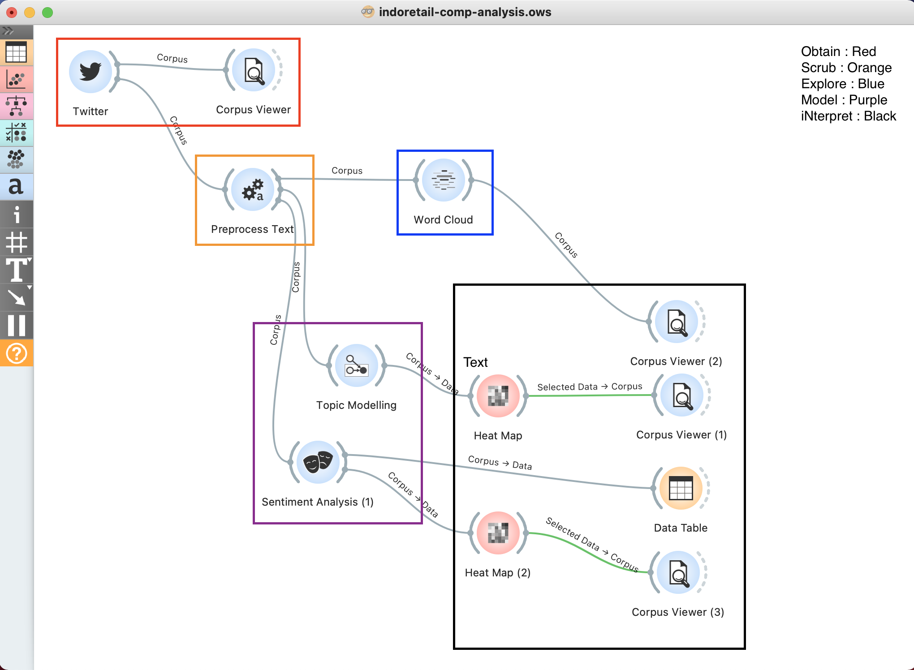

TLDR : You can get lost easily in twitter data mining, so you have to be VERY SPECIFIC on what you trying to find out before you even begin diving.
Here, we use tweets from 4 big retail players in indonesia, input them 'orange data mining' toolkit, and output wordcloud (common keywords & hashtags they used to make them stands out), 10 topics in general from those tweets (sentence version of wordcloud, to learn what are they talking about), and sentiment analysis on those tweets (we can see their customers positive & negative feedbacks, and how can we learn from them).
Scenario
Following up from my previous journal, i've digging around ways on how can we properly mine twitter data, and this is when i discovered 'Orange Data Mining'.
Watched few videos on data analysis & sentiment analysis, looks fun. but that one beautiful word that hook me up for good. open-source. i'm sold.
Prerequisite
Just like cooking, you need to get the ingredients & the proper cooking tools before we start, hence below the ingredients you must get & tools you must download:
- Python3 (or just get whole Anaconda)
- Twitter API token
- Orange Data Miner (duh) + setting up the twitter widgets
Now we have all ingredients, let's cook some data with our usual OSEMN step-by-step cookbook!
Obtain
Open 'twitter' widget and enter the twitter API & users you wanna get the data. here we getting 4 big retail players in indonesia
Once you got it, open 'corpus viewer' to see the overview of the data. press ctrl + a, and click 'content' in 'display feature' to see the clean content of the tweets you just obtained.
Scrub
'Insert widget' from twitter to make sure we get the data from what we obtained, and open 'preprocess text' widget and follow the setup in the image below.
For indonesian stopword, you can get the data here and copy & paste it in your empty .txt file and load it inside orange
Explore
'Insert widget' from 'preprocess text' and open 'wordcloud', and you will get this output. (pull the 'words tilt' to max and come back zero to get all data)
I know, just like i mentioned in previous article that breaking down tweet into words are just return word with no meaning.
Since twitter was the father of hashtags, we will look into interesting hashtags. here, lets look at #ppkm (lockdown in indonesian). and we can further analyse it by click at #ppkm, and open 'corpus viewer' widget.
Turns out, we can see that only acehardware uses this hashtag, and promotes on ice cream walls, massage machine, and upselling their delivery service due to lockdown
Model
We'll be having 2 kinds of modelling. topic modelling & sentiment score
Topic Modelling
In layman term, topic modelling is when we take all of these many words and try to group them together. here we group it to 10 different topics in general, which we can see result below
For techies & interested readers, we will be using 'Latent Dirichlet allocation' model
We can see each of those 10 topics of the orignial tweets by using heatmap, and group it together by topics, result below
Click particular root, and see each tweets in 'corpus viewer'
Sentiment Score
Next is sentiment score of each tweets. layman term, is to convert the tweets to numerical between -1 to +1, where -1 is negative tweet (eg : 'this place is sucks') and vise versa (+1 for tweets 'this place is wonderful'). You can follow the setting below
For techies & interested readers, we will be using 'Vader' model

For begineers, you can start with 'Data Table' widget to display the data, scroll to the end, and click 'compound' column to sort the score. (compound is the overall sentiment of each given tweets)
For intermediate, you use heatmap (same as topic modelling), group it together by topics, result below
and click particular root, and see each tweets in 'corpus viewer'
iNterpret
We can draw conclusions from all 'heatmaps' (or data tables) & 'corpus viewers'. and let us show you how our 'tree' look like & parts they play in OSEMN.
Wordcloud :
- All users leverage hashtag on either current event hapening (#ppkm lockdown & merdeka independence day), their collab (tokopedia with bts), or their own corporate hashtag (acesemangataktivitassetiaphari, keluargatransmart, belisemuadishopee)
- #ppkm : we can see that only acehardware uses this hashtag, and promotes on ice cream walls, massage machine, and upselling their delivery service due to lockdown
- We can explore in-depth too on #merdeka and each of the corporate hashtag
- Other than that, the tweets are very 'conversational', might consider update more stopwords, but if update it result to 90% data gone, we might need to get tweets by 'context' lookup, rather than 'user' lookup
For Topic modelling & Sentiment Score. you really need to know exactly what are you trying to find out.
Final words from Dwi
I couldn't emphasise more on this, in twitter data mining, you REALLY need to be very specific on what exacly are we trying to find out. As there is SO MUCH data, which we can get lost easily. either you will devour these data, or the data will devour you
For beginners to really abe to digest the usefulness of 'topic modelling', find english topics that is easy to interpreted in 'topic modelling' (eg : #machinelearning give out pretty clean results)
Of course, you can download the analysis I made here and open it in your orange. You will see an error message from the heatplot part. so please take a breath, dont panic, and read the error message slowly, and google what you want to fix